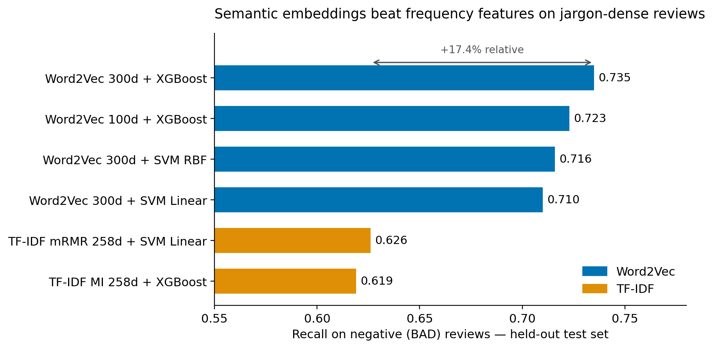
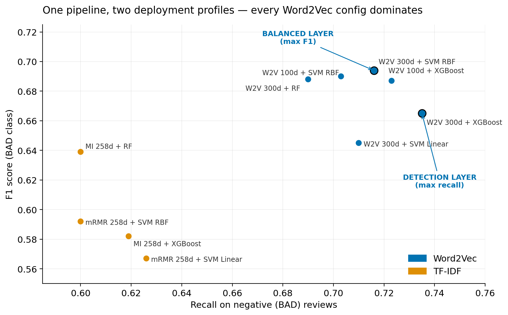
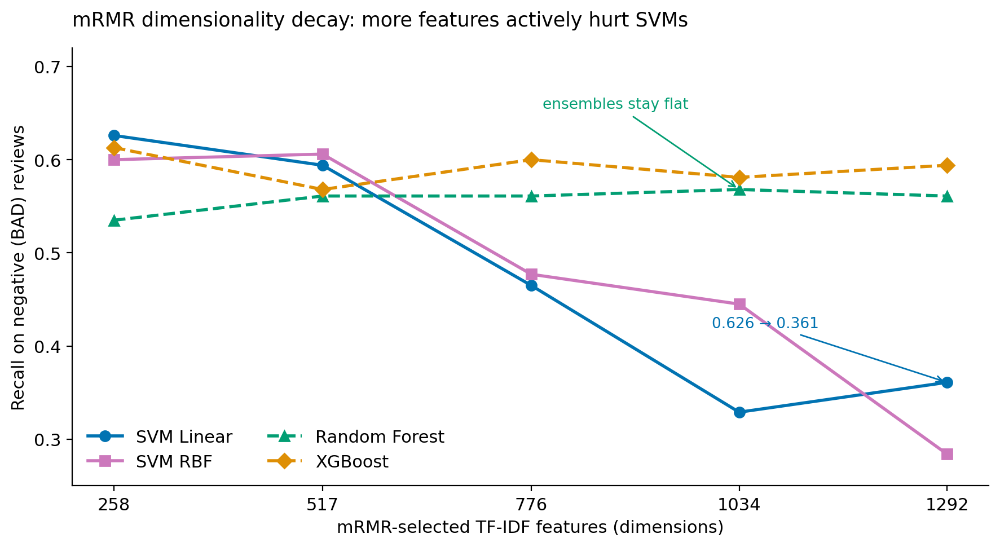
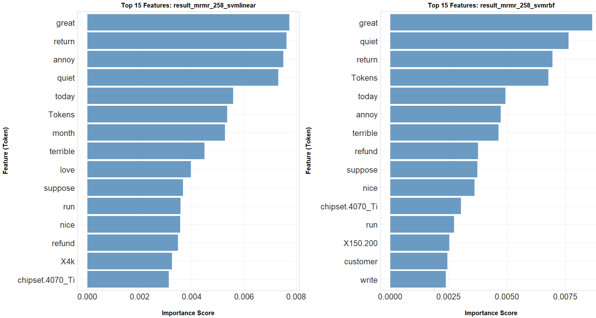

TL;DR重點摘要
- Built an end-to-end NLP pipeline in R to classify Amazon GPU reviews into positive / negative sentiment.
- 以 R 建置端到端 NLP 流程，將 Amazon 顯示卡評論分類為正面／負面情感。
- Word2Vec (Skip-gram) significantly outperformed TF-IDF across all four classifiers — validated with Friedman + Dunn's tests (Holm correction), not just point estimates.
- Word2Vec（Skip-gram）在全部四種分類器上皆顯著優於 TF-IDF——以 Friedman 檢定 + Dunn's 檢定（Holm 校正）驗證，而非僅比較單點數值。
- Best negative-review detection: Word2Vec 300d + XGBoost → recall 0.735 (best TF-IDF: 0.626).
- 負評偵測最佳組合：Word2Vec 300 維 + XGBoost → 召回率（Recall）0.735（TF-IDF 最佳僅 0.626）。
- Best balanced model: Word2Vec 300d + SVM RBF → F1 = 0.694.
- 最佳平衡模型：Word2Vec 300 維 + SVM RBF → F1 = 0.694。
- mRMR feature selection proved more efficient than Mutual Information for TF-IDF pipelines.
- 在 TF-IDF 流程中，mRMR 特徵選取比互資訊（Mutual Information, MI）更有效率。
Methodology at a Glance方法論一覽
Two text-representation tracks — TF-IDF (with MI and mRMR feature selection at 258–1,292 dimensions) and Word2Vec Skip-gram (100/200/300 dimensions) — were each combined with SVM (Linear / RBF), Random Forest, and XGBoost. All 13 feature sets are hybrid: text features plus 22 metadata features (brand, chipset, VRAM, review length, etc.). Every configuration was evaluated over 30 repeats of stratified 10-fold cross-validation.
兩條文本表示路線——TF-IDF（搭配 MI 與 mRMR 特徵選取，258–1,292 維）與 Word2Vec Skip-gram（100/200/300 維）——分別搭配 SVM（Linear / RBF）、Random Forest 與 XGBoost。全部 13 組特徵集皆為混合特徵：文本特徵加上 22 個 metadata 特徵（品牌、晶片、VRAM、評論長度等）。每組配置均以 30 次重複的分層 10-fold 交叉驗證評估。
Key Results關鍵結果
| Objective目標 | Best configuration最佳配置 | Performance表現 |
|---|---|---|
| Max negative-review detection (Recall)負評偵測最大化（召回率） | Word2Vec 300d + XGBoost | Recall = 0.735 |
| Balanced performance (F1)平衡表現（F1） | Word2Vec 300d + SVM RBF | F1 = 0.694 |
| Best TF-IDF baseline (Recall)TF-IDF 最佳基準（召回率） | mRMR 258d + SVM Linear | Recall = 0.626 |




Statistical rigor: Friedman test — Recall: χ²(51) = 11,827; F1: χ²(51) = 9,811.3, both p < 0.001. Dunn's post-hoc test (Holm correction) confirmed the top-performing group is dominated by Word2Vec configurations.
統計嚴謹性：Friedman 檢定——召回率：χ²(51) = 11,827；F1：χ²(51) = 9,811.3，皆 p < 0.001。Dunn's 事後檢定（Holm 校正）確認最佳表現群組由 Word2Vec 配置主導。
Business Applications商業應用
Automated review monitoring自動化評論監控
Deploy Word2Vec + SVM RBF / XGBoost as a real-time sentiment engine across e-commerce platforms — replacing manual review reading at scale.
以 Word2Vec + SVM RBF / XGBoost 作為即時情感引擎，部署於電商平台——大規模取代人工逐篇閱讀評論。
Cross-platform brand-health tracking跨平台品牌健康度追蹤
Key terms ("coil whine", "dead arrival", "refund", "RMA") form a monitoring dictionary for CRM, social media, forums, and video comments.
關鍵詞（coil whine、dead arrival、refund、RMA）可作為監控詞典，應用於 CRM、社群媒體、論壇與影音留言。
Product improvement insights產品改善洞察
Negative-review clustering surfaces actionable themes: hardware defects (coil whine), DOA, thermals, and power/case compatibility.
負評聚類揭露可行動的主題：硬體瑕疵（coil whine）、到貨即故障（DOA）、散熱問題、電源與機殼相容性。
Competitive benchmarking競品比較
The framework compares consumer sentiment across brands (MSI vs. ASUS vs. GIGABYTE) and product tiers (RTX 4060 → 4090).
本框架可比較跨品牌（MSI vs. ASUS vs. GIGABYTE）與跨產品階層（RTX 4060 → 4090）的消費者情感。
Read the Full Work完整文件
All documentation is bilingual (English / Traditional Chinese) on GitHub:
所有文件於 GitHub 皆提供雙語版本（English／繁體中文）：
- PAPER — condensed, business-oriented thesis (~18 pages)精簡商業導向論文（約 18 頁）
- METHODOLOGY — full technical methodology, formulas & hyperparameters完整技術方法論、公式與超參數
- RESULTS — all 52 model configurations & statistical tests全部 52 組模型配置與統計檢定